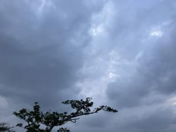
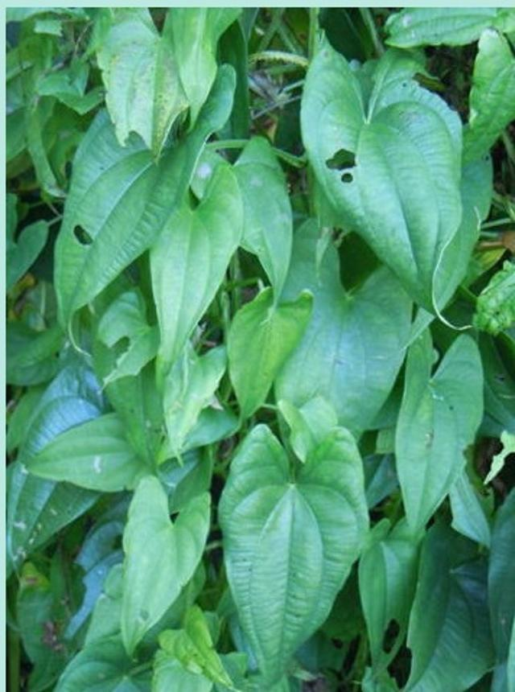
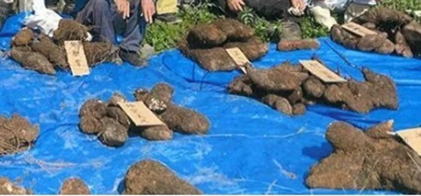

うるがいの話 ある日
最新: やまん（山芋）【うるがいの話 ある日】とは 一日だけのプログです
『うるがいの話』の最新一日だけのプログで、通信料が少なく経済的だ。カニの画像をクリックすると全ての日付が載る『うるがいの話』サイトを表示します
|
|
【うるがいの話】 うるがい(ｳﾙｶﾞｲ urugai)とは、『もずくがに』の名前でとても大きくなります。 |
|---|---|
|
|
【カミマヤーの話】 猫のことを方言でマヤーといいます。カミマヤー（kamimayaa）とは、神の猫のことです。 |
|
【たながぁの音楽】 たながぁ（ﾀﾅｶﾞｰ tanagaa）とは手長えびのことで、何種類かあり大きいのは車 エビぐらいになります。 |

|
【ぶながぁの話】 ぶながぁ(ﾌﾞﾅｶﾞｰ bunagaa)とは、赤い髪の毛、赤い身体、そして身長は１ｍ２０ｃｍ ぐらい、川の蟹を食べているの目撃された。場所は沖縄県国頭郡大宜味村のと ある村僕の隣近所に住んでいる爺さんから、聞いた話です。 |
|
|
【ギーマの話】 ギーマ(giima)とは、山原の里山に咲くスズランに似た、 花を付けます。実は食べられます、 気が付くと口の周りが紫になっています。 |
2026年02月12日 (木）やまん（山芋）
15:02

やまんの調理方法は? 琉球新報より
側溝近くの小さな畑。ヤシ、桑、クチナシ、クロキ、柿の枝を覆
い尽くすまで繁殖した、やまん（山芋）の葉っぱ。知り合いが庭
の草刈りをやった方がいいと言う。その人は、やまんを雑草と勘
違いしていた。
昨年は、１株でバーキ【「バーキ」とは、ホウライチクで編む沖
縄の竹かごのこと】からはみだすサイズのやまんができた。友達
からそれを見たいので１５分で向かうと電話があり、やって来て
「信じられない」と一言言って帰った。
 
新聞では、バーキの説明はなかったので追加した。近所に住んで
いたオバーが、山芋を作っていた。芋がとても大きいビックリし
た思い出がある。ヨメは、紅芋と勘違いしている。そうだろうな
町の人はネ。ただ、山原から出て那覇の店で、山芋の商品をみて
え！、山原の山芋と違うと驚いた。オバーは、方言は言わず山芋
だよと言っていた。